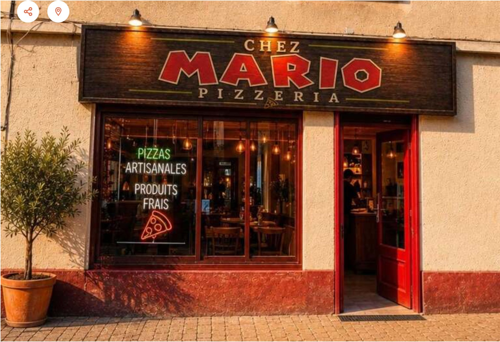

Saint-Marcellin-en-Forez · Ouvert dès 18h30
Voir nos pizzas →Au cœur de Saint-Marcellin-en-Forez, Chez Mario c'est un lieu simple, convivial et familial où chaque pizza est préparée avec amour. 14 pizzas artisanales, toutes faites maison, élaborées à partir de produits frais et de qualité.
Un concept centré sur l'essentiel : de bons ingrédients, une pâte soignée, et une générosité qui fait la différence. Sur place ou à emporter — bienvenue chez nous.

| Lundi | Fermé |
| Mardi | 18h30 – 21h30 |
| Mercredi | 18h30 – 21h30 |
| Jeudi | 18h30 – 21h30 |
| Vendredi | 18h30 – 22h00 |
| Samedi | 18h30 – 22h00 |
| Dimanche |
13 Avenue de la Libération
42680 Saint-Marcellin-en-Forez